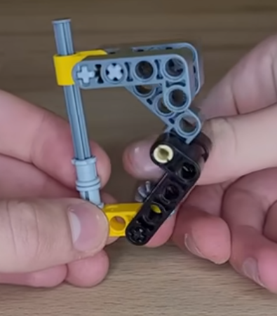

planning#
aid resources#
pre season - artic challenge#
basic driving build artic slide
-
show differential drive
Session1 - Oceans#
ocean depth https://www.youtube.com/watch?v=A_h_atP6jBs
80% of oceans are unexplored
{kind=link}
what part of the oceans you and your teammates would want to explore?
What is a submarine used for?
What can a submarine do that a diver cannot do?
What kinds of animals would you want to discover in the ocean?
build years submarine model - sub build1
Build the coral reef and shark models
Session2 - sea vehicles#

pressure
Session3 - Ocean Layers#
Ocean Layers
专 专
专
专 המעמקים
living things are found in the sunlight zone of the ocean
How do we explore each zone?
what do you think lives in the deepest parts of the ocean?
What is different about animals that live in darker parts of the ocean?
What is challenging about exploring the deepest parts of the ocean?
How do humans explore the ocean and what do they need to do it?
code the model to drive front and backward
modify the robot so it drives with four wheels
change the program so the LEGO model moves in a different way
modify your model so it represents a deep sea vehicle
Session4 - lights#
sunlight zone receives light that warms the water and enables plants to grow ( marine biologist )
What tools does a marine biologist use when studying ocean animals?
? colors?
model extend use push sensor to turn on lights (hub leds)
intergrate with display/graph block
? count on grapth
? display warning image on display plot
``
## Session5 - sensors
* explore the use of lights and sensors
What kinds of sensors would be useful on a submarine? How are submarines used to explore the ocean?
🔨🔨🔨 model extend - color sensor
* flash a light when a team member approaches the sensor
* attach the sensor, motor, and hub to the submarine from Session 1
* color detection:
When the sensor detects a black or gray object, the propeller spins quickly to back away.
When the sensor detects a blue or yellow object, the propeller spins slowly to move in and get a closer look
## Session6 - arms
submarine arms are used to collect samples from the ocean floor
what kind of arms are best for each task?
* [grabAndLift](../200_subs/grabAndLift/readme.md)
🔨🔨🔨 model extend add arms
## Session7 - speed
🔨🔨🔨  Modify the boat model to different speeds
* transmissions:
* speed ratio TBD
* [simp 90 degree](../201_transmissions/simp90dg/readme.md)
## Session8 - navigation
* how do we navigate in the deepest parts ?
What do you hope your submarine will discover at the bottom of the ocean?
🔨🔨🔨 drive and navigate
* Pick two spots on the mat the submarine should visit make vehicle to move between two icons
* Can you code the robot to start in the sunlight zone and stop in the abyssal zone?
* Can you drive the robot at different speeds?
## Session9 - Deep Sea Discovery
### new creatures
Research animals that have recently been discovered.
* https://www.stem.org.uk/resources/elibrary/resource/32764/newly-discovered-species-age-7-11
* https://www.youtube.com/watch?v=UM0HpYWFEJU
* https://www.youtube.com/watch?v=jDj_KCANzMU
* https://www.youtube.com/watch?v=yPhhVqjpnKE
Imagine that your team discovers something strange while traveling through the ocean.
🔨🔨🔨 Use the prototyping pieces to build a mysterious and unknown creature.
what part of the ocean your creature is from and what protection it may need How much space does your creature need? Does your creature live in a cave or in open water?
## Session10 - new habitat
Artificial habitats are created by humans provide protection
for fish and other small animals or protect a coast from erosion
🔨🔨🔨 build artificial habitat for the new species using the prototyping pieces
Can you draw the habitat you are going to build?
## Session11 - Exploration Station
* [live underwater](https://www.usatoday.com/story/news/nation/2023/05/10/noaa-the-proteus-group-plan-underwater-space-station-for-research/70171186007/)
* prototyping pieces to build a place where people can study the ocean
* Build the tools or equipment the people might need.
* [tools used in ocean
exploration](https://oceanexplorer.noaa.gov/technology/technology.html)
Does a marine biologist use different technology than a submarine pilot?
## Session12 - final model
build team model that shows your team’s ocean journey
* requirements:
* exploration station
* an artificial habitat,
* an ocean creature
* Motorize any part of the team mode
## Session13 - poster
create your team poster use words, drawings, and photos on your poster
* [examples](https://www.google.com/search?client=ubuntu&hs=0WK&sca_esv=d508bae1ee411921&sca_upv=1&channel=fs&sxsrf=ADLYWIIJmUgs_7TZqS3L3jWIZlL6RBlw0w:1725000015014&q=fll+poster+examples&udm=2&fbs=AEQNm0AeMNWKf4PpcKMI-eSa16lJoRPMIuyspCxWO6iZW9F1Ns6EVsgc0W_0xN47PHaanAEtg26fpfc9gg2y1-ZsywNNidIzOA0khSyMN51n7r3LlDC9M1NYStuTRDcBUYQ58dKt-Q6SigUS4Yne5yDHLg0vPBr98Nz98twIaNcnWiKaD4QuEh93Q53sB-UkWP9OcfO5KeatY98HR7cDW9ZTjFpZV7kJtA&sa=X&ved=2ahUKEwjxrYfpjZyIAxWDxgIHHfuCBX0QtKgLegQIExAB&biw=1534&bih=722&dpr=1.25)
## Session14 - presentation
prepare for your event
TBD